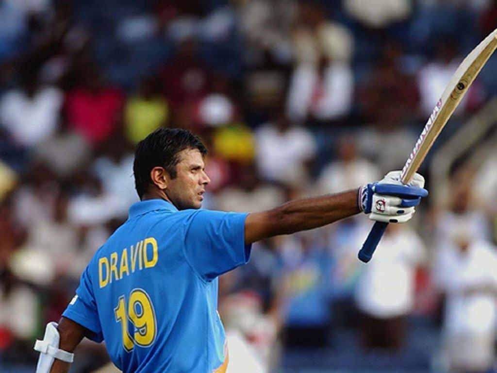

Calling the partnership with Laxman a memorable moment of his career, Rahul Dravid said it was the period when the crowd really got behind the Indian team.

Former batsman Rahul Dravid recalled India’s historic Eden Gardens Test against Australia in 2001, highlighting how the team was spurred to perform even better on the final day of the match thanks to the overwhelming participation of the crowd. Dravid, who scored 180 in the Test and was involved in a match-altering partnership with VVS Laxman, explained the atmosphere on the final day of the match, saying he can feel the electricity of the stadium even today.
“The atmosphere on the last day, after tea, the time when we were trying to take wickets,” Dravid said on the show ”Kolkata 2001 - Dravid & Laxman Special. “Harbhajan Singh was bowling and wickets were falling. The support from the crowd was incredible. The crowd at Eden Gardens helped us win the 2001 Kolkata Test. That support, encouragement and cheer after every ball, I remember it till now and I can still feel that.”
Dravid and Laxman stitched a 331-run partnership for the fifth wicket in the second innings while following on, to help turn the game around. After being shot out for 171 in the first innings, India declared on a mammoth 657/7, setting Australia 384 to win on the final day. Australia, who were 161/3 at tea and pushing towards a draw, were jolted in the final session, losing seven for 46 runs.
FootBall
[1] ISL: Sunil Chhetri's Brilliant Header Helps Bengaluru FC Beat Kerala Blasters
ISL: Sunil Chhetri scored the only goal of the match in the 55th minute, helping his side maintain their unbeaten streak in the Indian Super League (ISL) this season.Read More...
Tennis
[1] It is important to focus on learning new skills during lockdown:Leander Paes
Indian tennis great Leander Paes on Monday stressed on the need to focus on learning new skills during the coronavirus-forced lockdown to keep oneself mentally and physically fit.Read More...
Go Back To Top Of The Page
Go Back HOME PAGE